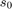
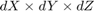
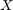
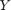
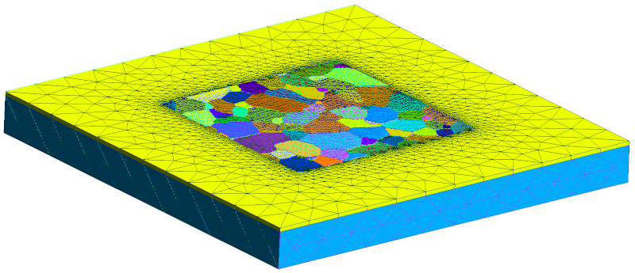

mtexdata titanium ebsd = ebsd('indexed'); grains = calcGrains(ebsd); G=gmshGeo(grains);
Contents
Change thickness
The default thickness is equal to the element size at grain boundaries (denoted  if a size-gradient is applied). This value can be changed as follows:
mesh(G,'titanium.msh','Thickness',20)
Add surrounding medium
One may want to embed the ROI into a prismatic surrounding medium, for instance to evaluate the local behavior of the ROI when surrounded by an homogenized material.
The following command creates a surrounding box of size  (the ROI is centered along the  and  directions):
mesh(G,...,'Medium',[dX dY dZ]);
E.g.:
mesh(G,'titanium_medium.msh','elementSize',20,'medium',[2000 2000 200]);
The element size is increasing with increasing distance from the ROI. To set the element size at the borders of the medium, append the mediumElementSize name-value pair argument. E.g:
mesh(G,'titanium_medium2.msh','elementSize',20,'medium',[2000 2000 200],'mediumElementSize',180);
